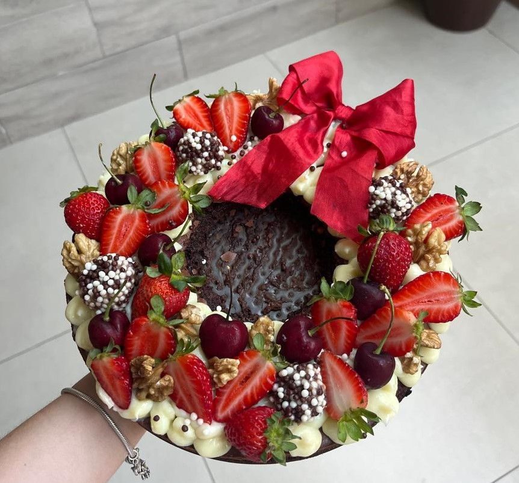
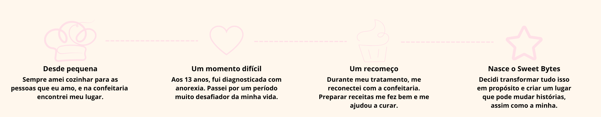

O Sweet Bytes nasceu para transformar o ato de cozinhar doces em algo acolhedor, leve e cheio de significado.
Aqui, acreditamos que cada receita tem o poder de criar memórias, fortalecer vínculos e tornar momentos simples em lembranças inesquecíveis.
Queremos inspirar você a desenvolver seu hobby, se reconectar com a comida e descobrir que cozinhar pode ser um gesto de amor — por você e por quem você ama.

Cada receita carrega mais do que ingredientes. Carrega afeto, memórias e conexões.

Projeto para fins
acadêmicos, feito
com amor pela aluna
Lívia Faccin
Copyright © 2026 Sweet Bytes